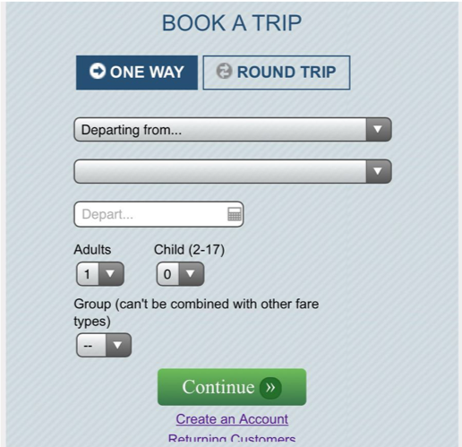
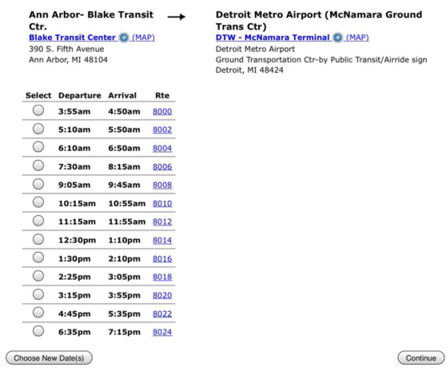
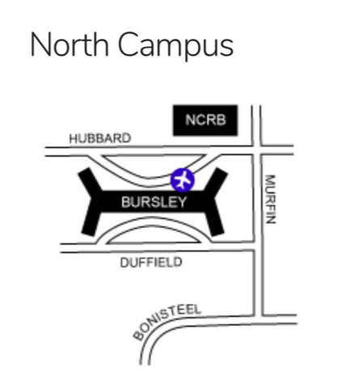
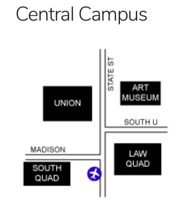
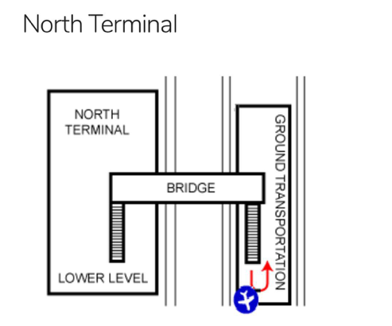
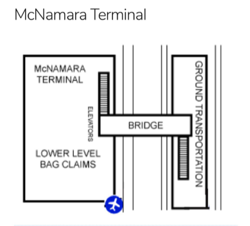
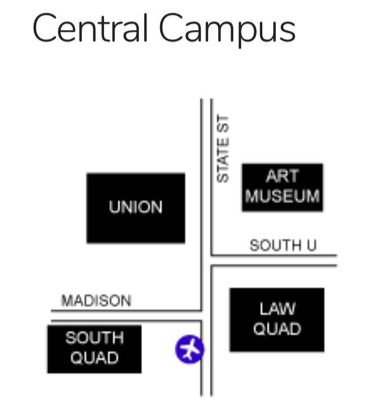
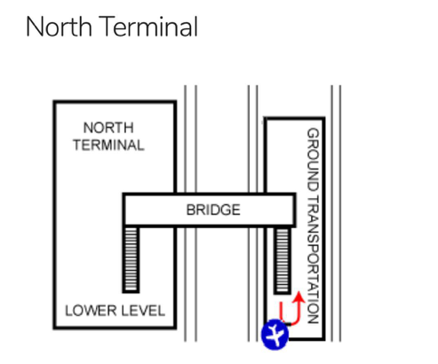
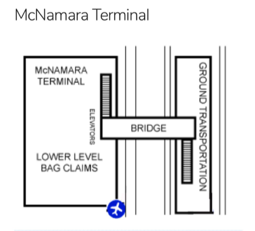

1. Uber/Lift: 如果有同行的同学一起拼车可以选择使用这两个非常方便的叫车软件，从机场到校园费用大致为50-70美金。
2. Michigan flyer: 网址：www.michiganflyer.com
对于没有车或没同伴的同学，乘坐Michigan flyer是个非常安全且价格划算的通行方式。提前网上预约单程每人12美金，可免费携带2个行李，多出的行李一个收费15美金。也可以在约定时间直接到车站，单程收费15美金，需注意要提前备好零钱，司机不会收20美金以上的纸币。Michigan Flyer每天有12-13趟班车来往于底特律机场——DTW和安娜堡之间，大约一小时一趟，停车地点有：Blake Transit Center（中校）, Kensington, Detroit Metro Airport 还有East Lansing。在网上订票的时候选取上车下车地点，乘车时间，航空公司以及乘车人数量。底特律机场有几个停靠站，Delta, Air France 和KLM在新航站楼，停靠的时候注意听车上的广播或询问司机以免坐错航站楼。
具体时间表和路线可在网上订票的时候看到：
 3. CSG AirBus: 网址：csgairbus.com
CSG Airbus是学校提供的巴士，在假期之前和学生返校时通行于U-M和底特律机场之间。Airbus只在固定时间提供，暑假期间就没有。建议在出行前到网站上查询，找到适合时间的班车。提前预约的话，单程价格为每人7美金，也可以按时到约定地点直接上车刷Mcard，11美金会记到学生账户。班车都在准确的时间开出，不会有Michigan time，建议提前五分钟到达停车地点。所有到机场的Airbus都会在三个地点pick up：北校是在Bursley的北部，Hill区域会在Alice Lloyd前方的southbound Observatory区域，中校是在State street上Law Quad街对面。机场接在North和McNamara Terminal都有，North Terminal的地点在Ground Transportation center，拿完行李后上两层电梯，过个天桥，下扶手电梯后可以在左侧看到车，McNamara Terminal的地点在五号Baggage Claim门口，详情见下图：
 




